Wrench är en av medlammarna i Dead-sec gruupen där Marcus (huvudpersonen) är med i. Han är med på denna lista eftersom att han är en rolig och bra skriven karaktär. Plus att jag älskar hans karaktärsdesgin.
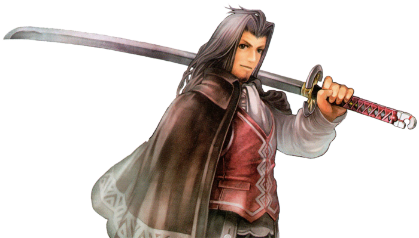
Dunban är en soldat och en hjälte med ett sant hjärta. Han är alltid villig att lägga sitt eget liv på linjen för att rädda alla andra. Han är lätt en av de mest mogna medlemmarna i Shulks team, om inte den mest mogna, och påminner ofta de andra om att inte bli för kaxiga eller slarviga och hålla fokus.
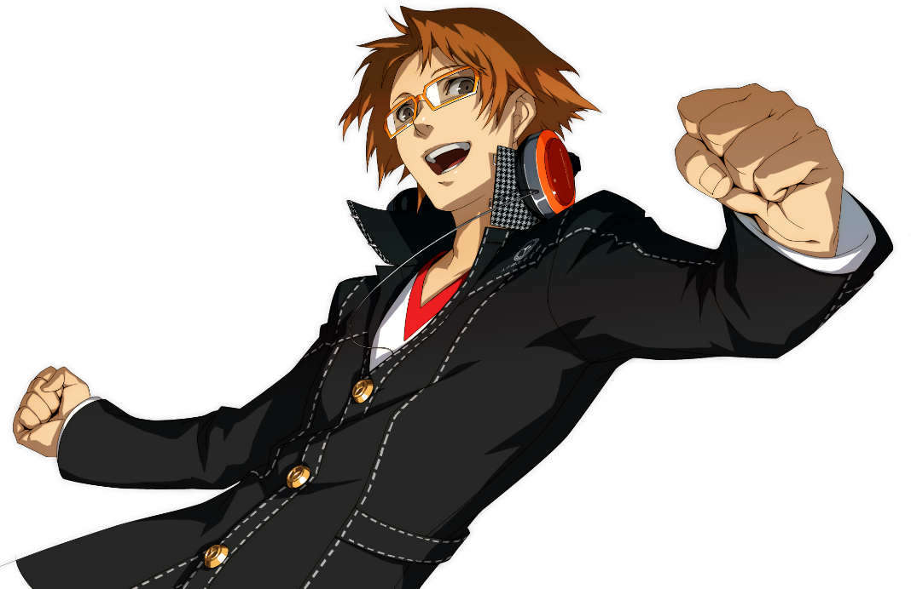
Yosuke är en klumpig utbytesstudent som anlände sex månader före huvudpersonen. Han är ofta målet för skämt om hans brist på muskler och kroppsstyrka, och slåss med knivar. Protagonisten möter honom för förstagången när man ser honom krascha sin cykel i en soptunna.
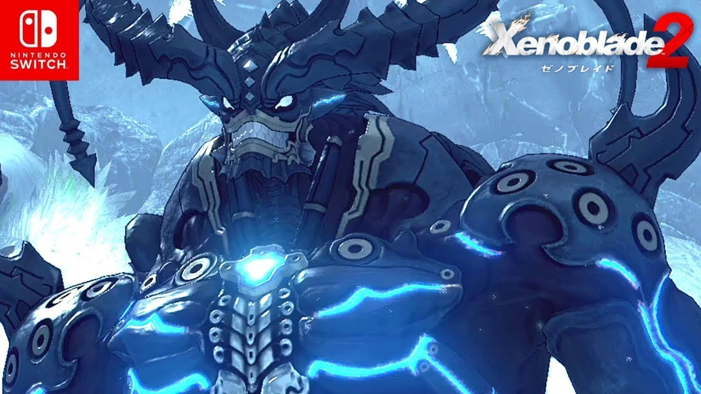
Wulfric är en sällsynt blade i Xenoblade Chronicles 2. Han kan ge enorm drivkraft till sina Drivers, Rex, Nia, Zeke eller Mòrag och deras allierade. Wulfric använder jordelementet, Använder en megalans och fungerar som en angripare i strid. Han är stor och kraftfull och har utseendet en demon. Han har två långa böjda horn, spikar som fodrar armarna och benen och en spikig svans. På varje axel har han en slags avloppskanal som släpper ut ånga efter att ha utfört vissa Specials. Trots sitt utseende är han en otroligt vänlig och tycker om att hjälpa andra.
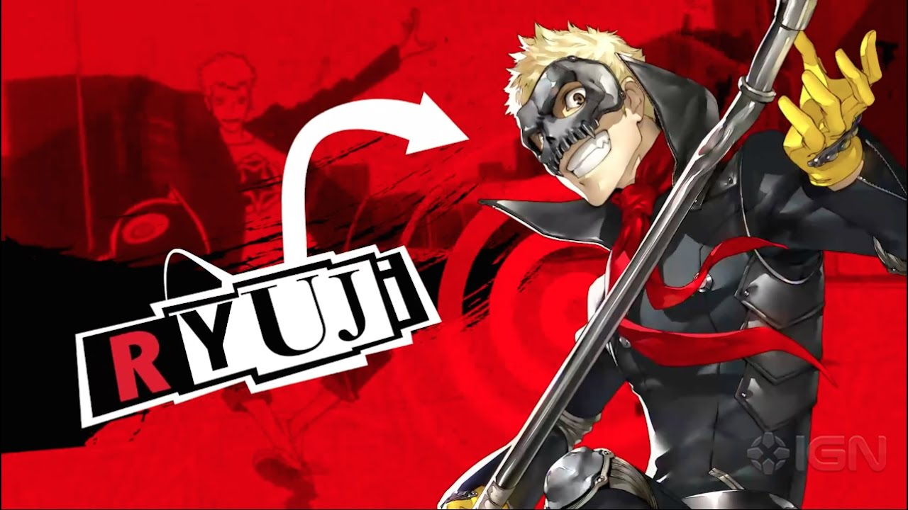
Ryuji är känt som en störande "problemstudent" i skolan vars dåliga beteende orsakar allvarliga problem för lärarna. Hans upproriska, illaluktande och olydiga natur är de perfekta egenskaperna att vara en Phantom Thief. Han är lite korthärdad och blir arg från även de minsta kommentarerna från andra och kan ibland till och med ta till våld. På motsatt sätt kan Ryuji säga elak kommentare utan att tänka på konsekvenserna,
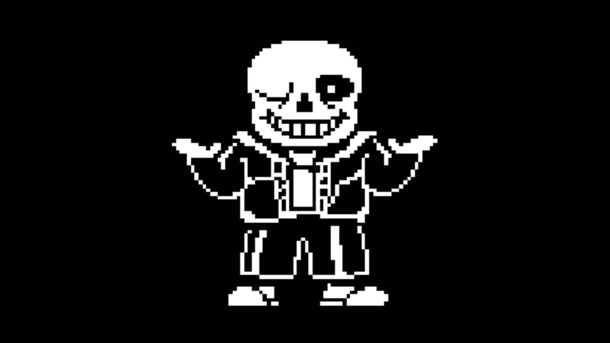
Sans är avslappnad, sover ofta på jobbet och tar raster. Hans lathet är en kombination av fatalism och apati. Han undrar om hans slöhet stammar från hans kunskap om att eventuella framsteg som han gör kommer att raderas när tidslinjen återställs. Omvänt föreslår han att denna kunskap kan vara "en dålig ursäkt för att vara lat."
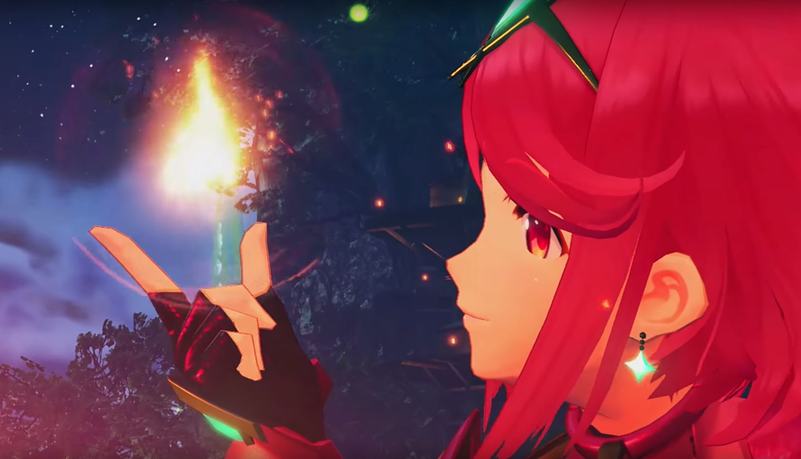
Pyra är hjältinan i Xenoblade Chronicles 2. Hon är en speciell legendarisk blade som ger enorm eld-elemental kraft till hennes driver, Rex. Som en blad är hon odödlig och har förmågan att snabbt återhämta sig från skador. Det ända sätt dö är om Kärnkristallen på hennes bröst förstörs, eller när Rex dör. Pyra och Rex börjar på en resa för att leta efter Elysium, och Rex är ägnad åt att skydda henne
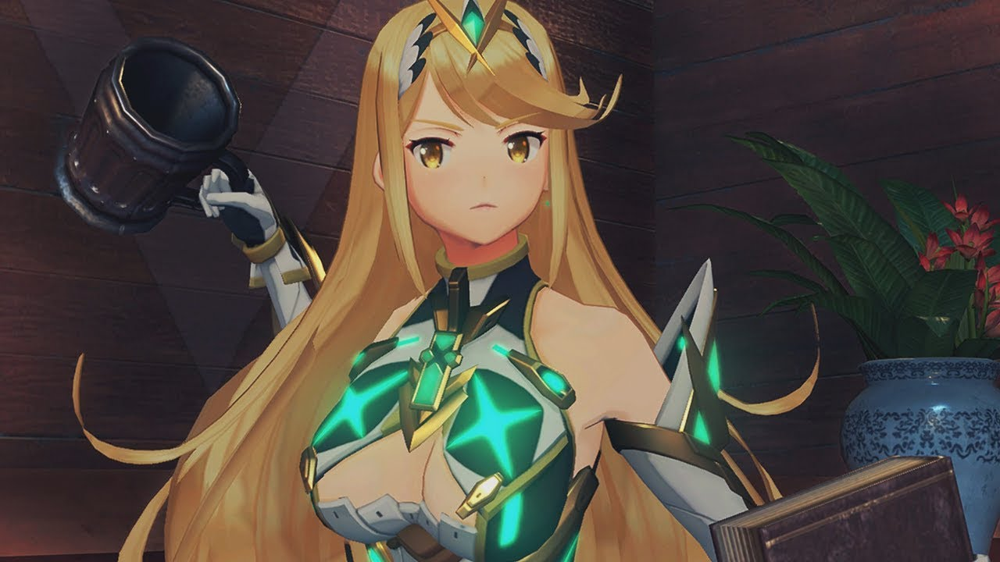
Mythra och Pyra är de två personifieringarna av Aegis, den legendariska bladet bär en smaragdkärnad kristallkärna, från vilken Pyra kan omvandlas till Mytra och vice versa. Hon söks av flera personer som Bana, ordföranden för Argentum Trade Guild, eller Torna-organisationen. Det sägs att ansträngningarna att hitta Aegis kommer att sänka världen till kaos. Rex ägnas åt att skydda henne, eftersom Pyra gav Rex hälften av hennes livskraft för att få honom tillbaka från de döda.Nathan "Nate" Drake är huvudkaraktären i Uncharted-serien. En före detta professionell skattejägare, Nate, beskrivs som en "djup havs berednings expert och action-pro". Sedan barndomen har Nate och hans äldre bror Sam trot att dom härstammar från den berömda engelska exploreren Sir Francis Drake.
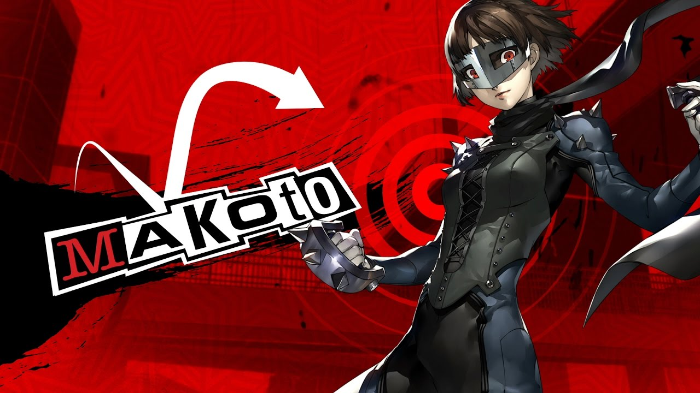
Makoto är en perfektionist som har en stark ansvarsfullhet och em orubblig verklighet. Makoto är strikt, intelligent, ärligt och mycket hårt arbetande. I själva verket är hon en mycket medkänsla och är en ung dam som förståelse för andra som arbetar hårt för att se till att alla är redo för. Makoto lider av ett inferioritetskomplex, eftersom hon känner att hennes äldre syster, Sae Niijima, är mycket mer anmärkningsvärd än hon är.
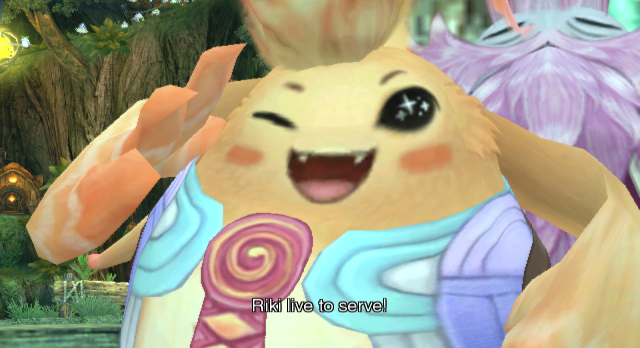
Naturligtvis talar Riki ofta om hur han faktiskt är en legendarisk hjälte som talas om i Nopon profetia. I själva verket har hans ställning som en hjälte endast beviljats av Chief Dunga som ett sätt att betala av de stora skulder som uppstått från hans och hans barns stora aptit. Bortsett från detta har Riki väldigt lite engagemang i historiens stora plot, istället bidrar till det mesta av spelets roliga karaktär.
Denna karaktär en den bästa karatäre som nånsin funits. Ifall du har något emot det. FIGHT ME!!!!
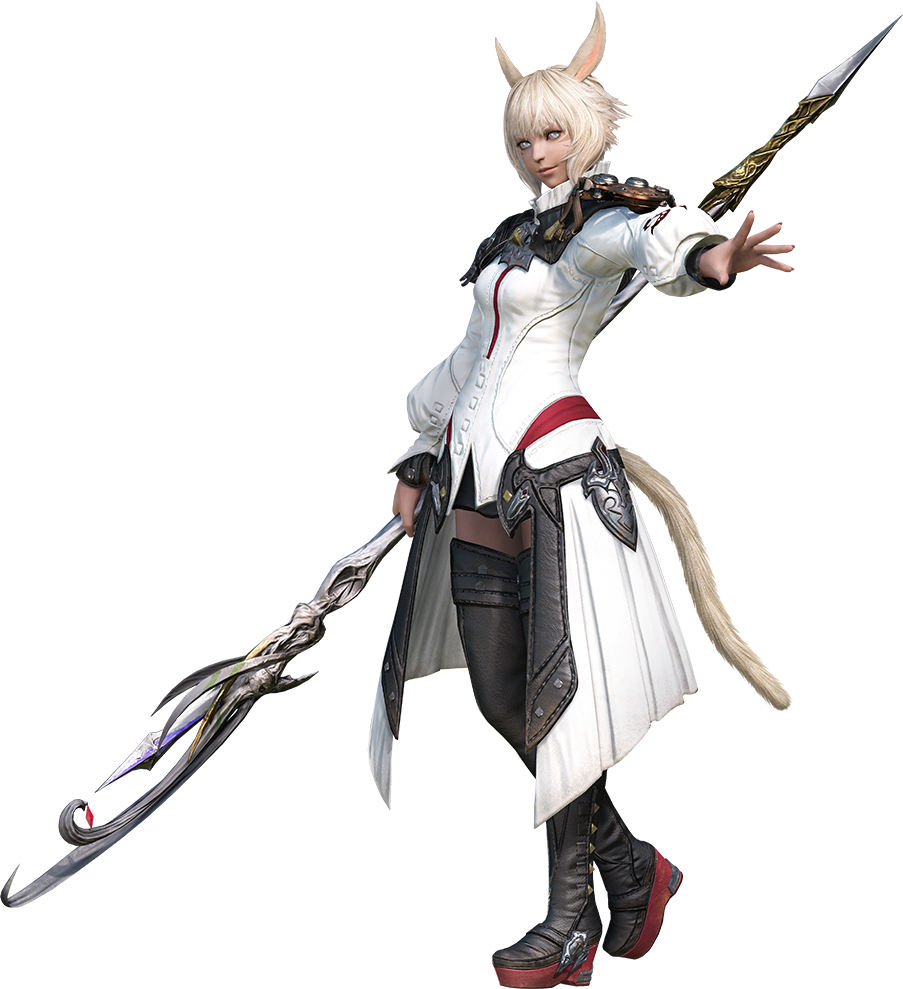
Y'shtola förblir ofta en taciturn, vältalad röst av förnuft även vid sidan om hennes lika vetenskapliga kamrater bland the Scions of the Seventh Dawn, vilket ger en skarp och relevant insikt som knappast kommer ifrågasätas. Detta ses bäst som en kontrast till Thancred, som ofta förlorar karismatiska och flamboyanta en-liners som böjs av hennes stoicism, oftare än med en skeptisk sarkastisk kommentar.
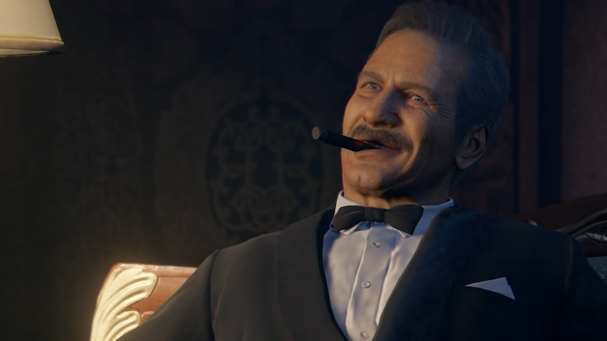
Victor "Sully" Sullivan är en amerikansk skattejägare, förmögenhetssökare och affärsman, liksom en vän, en gångs mentor och farsfigur av stipendiatjägaren Nathan Drake. Han är tritagonisten i Uncharted: Drake's Fortune, deuteragonisten i Uncharted 3: Drake's Deception och en stödjande huvudperson i både Uncharted 2: Among Thieves och Uncharted 4: Thief's End.
Under hela Uncharted-serien framträder Sully som en stor karaktär och allierad till Nathan Drake och hans vänner, som ofta går med honom i sina olika äventyr.
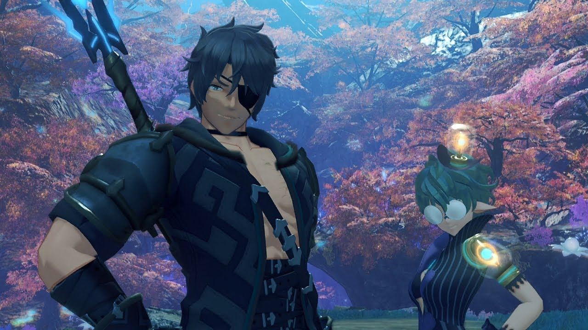
Hans Höghet Kronprinsen Ozychlyrus Brounev Tantal, mer känd som Zeke von Genbu. är en av huvudkaraktärerna i Xenoblade Chronicles 2. Han är en driver och följs av hans Blade, Pandoria.
Han är benägen att hålla stora tal och maniketter när han mötr folk. Zeke kallar sig "Zeke von Genbu, Bringer of Chaos" och "The Zekenator", och använder liknande grandiösa namn för sitt svärd och konster.
Mòrag introducerar honom som "Thunderbolt Zeke", Kronprinsen och mest kraftfulla förare av Tantaliens riket. Han frivilligt arbetade som en särskild sändebud för Indoline Praetorium, för att testa Aegis förare i strid. Pandoria säger att han "har den mest hemska lyckan" och är rädd för höjder. Zeke och Pandoria har en husdjursköldpadda och maskot som heter Turters.
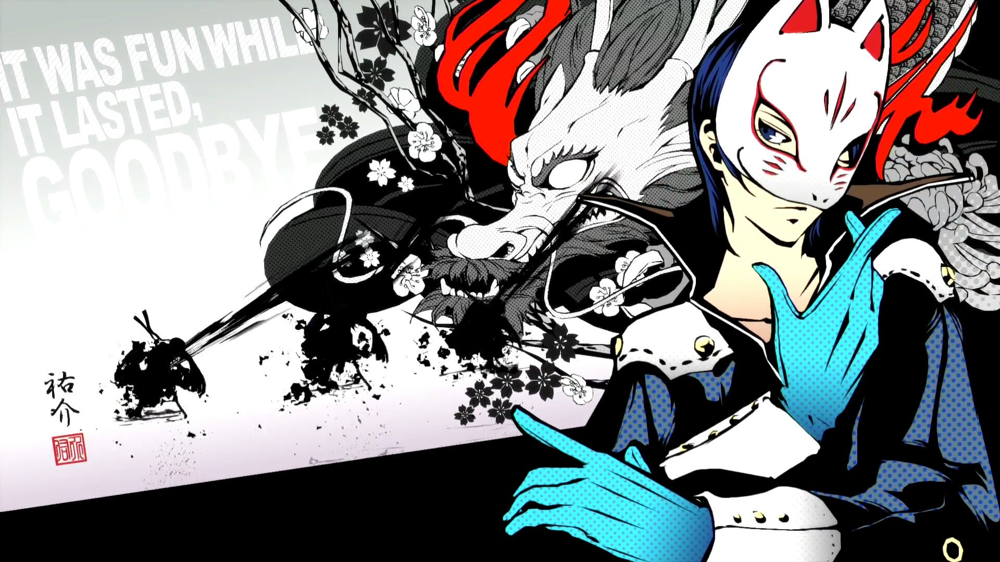
Vid första anblicken är Yusuke en väldigt sammansatt och uppsamlad individ, och vid ytterligare inspektion sträcker sig detta till en känsla av metodisk intelligens och en mycket uppmärksam person. Yusuke agerar med poise och elegans, som visas av hans vältaliga, poetiska sätt att tala. Han kan hålla sig lugn även i svåra omständigheter, men kan också spela dramatiskt ibland; Andra har pekat ut honom som konstigt, och även Yusuke medger att han kan ses som excentrisk.
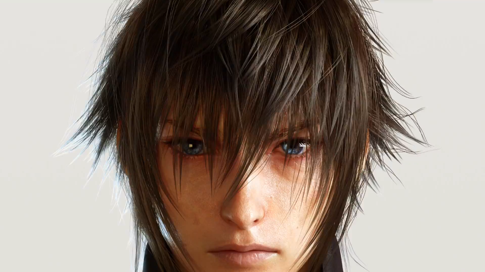
Noctis är son till King Regis och reser tillsammans med sina nära vänner Gladiolus Amicitia, Ignis Scientia och Prompto Argentum, från sitt hem av Insomnia till Altissia, att gifta sig med Lunafreya Nox Fleuret och stärka en politisk union. Han drivs in i en konflikt mot Niflheim-riket, och måste ta sitt uppdrag och bli en kung. Noctis behandlar sina nära vänner som jämlikar, utbyter skämtar med dem och spelar lekfullt. Noctis kämpar inledningsvis för att klara sitt ansvar, ser mot sin far som en förebild och strider för att artikulera sina känslor, som han föredrar att hantera ensam. Under resan noterar hans tre följeslagare sitt förbättrade förtroende, och hur han har blivit mer beslutsam.
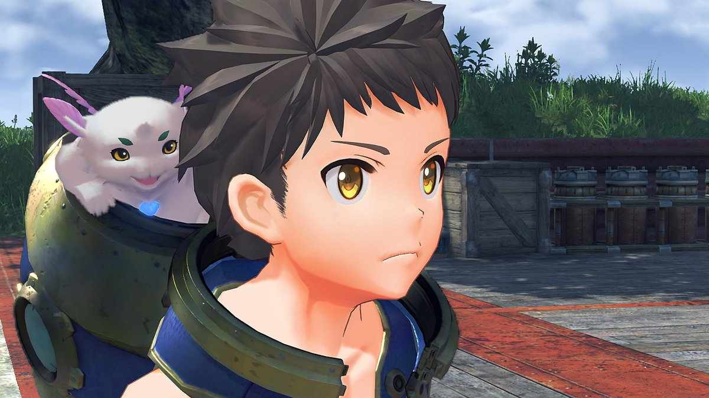
Rex är huvudpersonen i Xenoblade Chronicles 2. Han är en driver som utnyttjar kraften hos ett blade som heter Pyra, även känd som den legendariska Aegis. Rex ägnar sig åt att skydda henne, och tillsammans med Pyra går han på strävan efter att hitta Pyras långt borttappade hem, Elysium. På grund av Aegis dualitet kan Rex köra den andra inkarnationen av vapnet som heter Mythra.
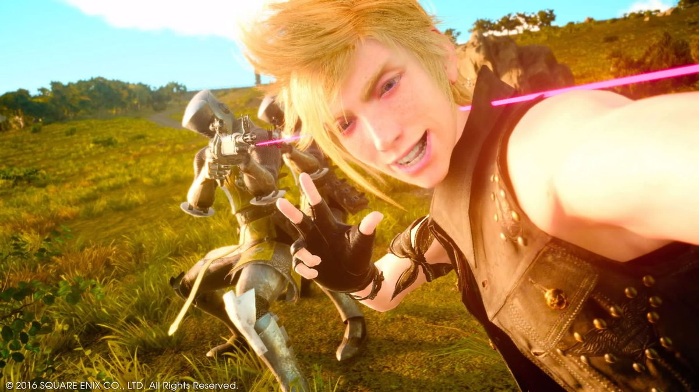
Prompto är Noctis vän från gymnasiet som tar bilder och vill spara bilder på sin vägresa. Prompto är den mest lekfulla av de fyra, uppriktiga och blir lätt slagen med kvinnor, särskilt Cindy. Prompto lider av ett inferioritetskomplex bredvid Noctis, Ignis och Gladiolus, på grund av hans brist på adel och hans brist på självförtroende. Han har mycket respekt för dem som vänner, utbyter skämtar med dem, ofta är de mest pratsamma. Prompto är bra med maskiner och använder dem som vapen.
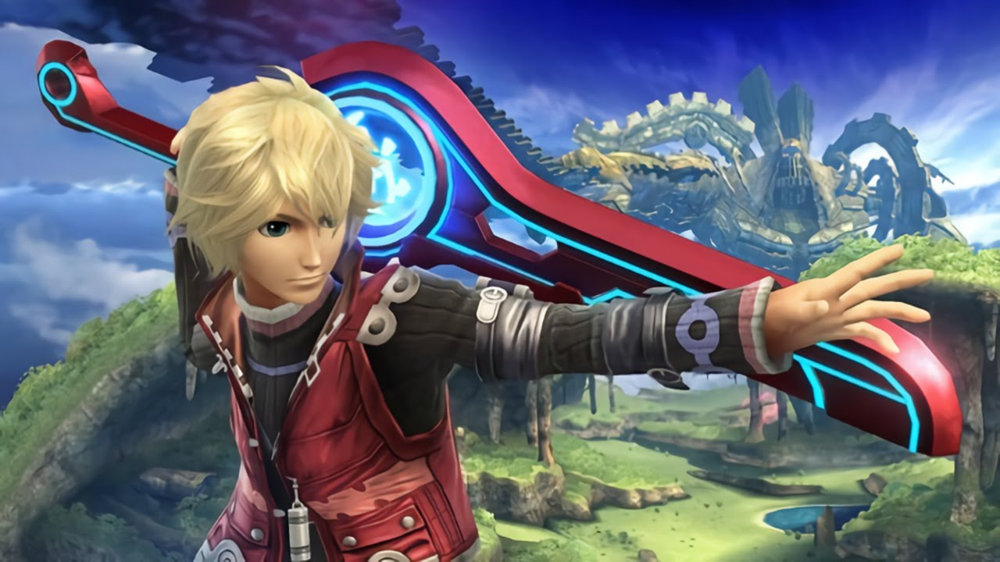
Som huvudperson i Xenoblade Chronicles är Shulk en ung man med starka egenskaper. Han är bestämd, organiserad, starkhjärtad, smart, snäll och snabb. Trots att han förlorat sina föräldrar i en ung ålder, var Shulk fortfarande omgiven av människor som brydde sig om honom och han brydde sig om dessa människor i gengäld. Hans vänlighet har noterats av flera karaktärer, framför allt Fiora, som säger att detta är den främsta anledningen att hon blev kär i honom. Men hans vänlighet har sina gränser, och han visar en väldigt hämndssida när han bevittnar Fioras uppenbara död i Metal Face-ansikten, varefter han lovar att döda honom och alla andra Mechon.